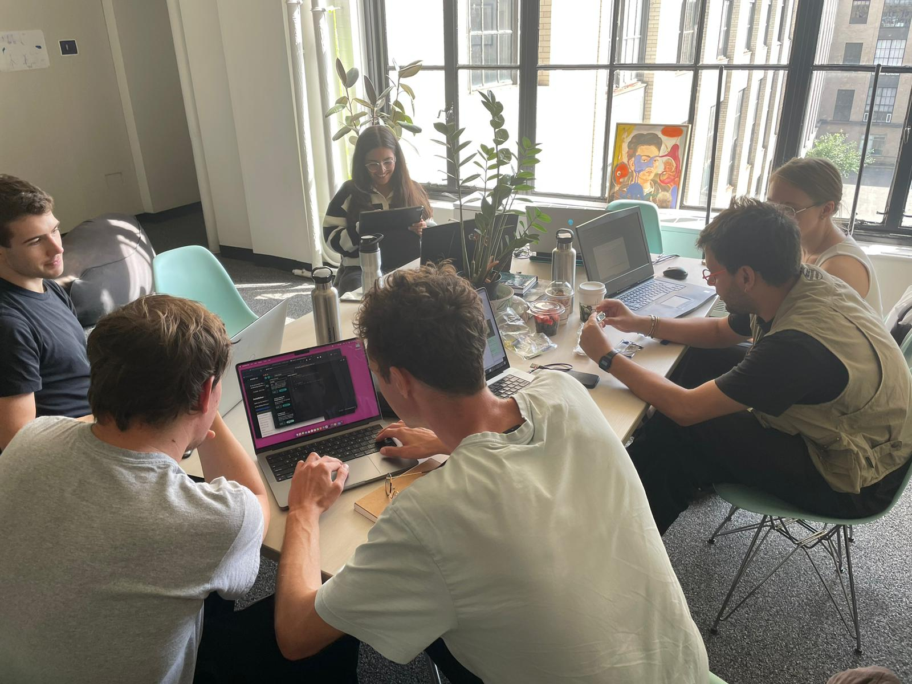
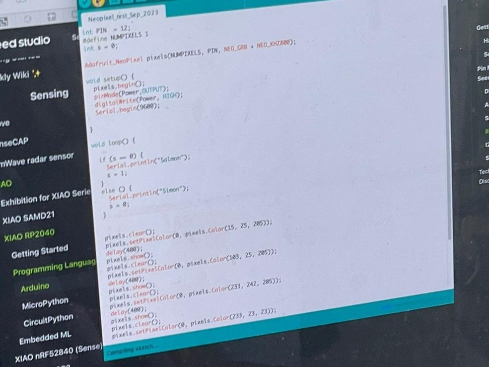
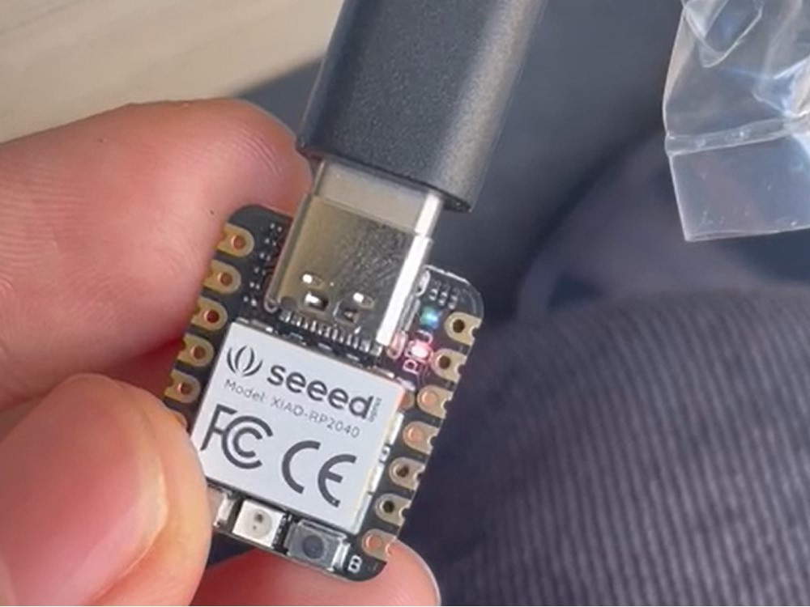
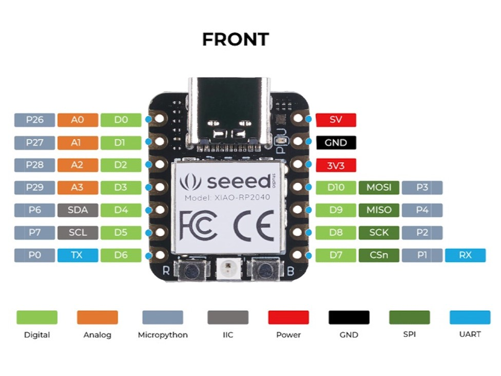

Simon Says (Serial Communication)
A LED that only listens to what simons says
Project Description
Simons Says is a popular game that requires participants to listening and follow instructions. The concept of the game is used to inspired this week's project for embebbed programming.
In the game, everyone have to follow the instruction that simon says. For example The phrase 'Simon says' is accompanied by an action or directive, like 'Simon says touch your nose' or 'Simon says jump in place.' Participants are expected to execute the given instruction solely when preceded by the phrase 'Simon says'.
Participants must follow the instructions only when "Simon" precedes the command with "Simon says."
If someone does the action without "Simon says" before the command, they are "out" of the game.
Similarly, in this embedded programming project, I created an interactive LED that will respond to specific commands only when preceded by the phrase "Simon says."
The LED act as a visual indicator of the program, turning on, red, blue, green or off based on the instructions given.
The user interacts with the program by providing input through serial communication via a keyboard
Final Documentation
Full Video of the GIF above
Serial Communcation
Implementing a chat-bot like response system in the serial monitor interface. This is done to ensure that the user can keep track of what they have input and what the program have output. When the user doesn't include the key phrase "simon says" the program prints a "sorry" message. When the user include the key phrase "simon says" the program prints an execution message.
Getting the NEO Pixel to change color
Since my goal is to get it to change color based on simon's instruction, I need to make sure that I can set different RGB values.
Working with the NEO Pixel

Working together with my friends at the Architecture section to help each other

Sample testing script for serial communcation, and changing rgb values in the NEO pixel
Working the LED in RP2040
Just testing with the LED (pin 11) blinking to make sure that I have connected the board correctly to my laptop.
Working XIAO/SEED RP2040

First Time working with XIAO SEED RP2040, I picked this because a friend of mine is also using this

Reading the datasheet helped me figure out that there's pin for the neopixel, and also the LED and power
Coding in Arduino vs MicroPython
Arduino Code -> I have been using Arduino for doing hardware and I actually like using this better than python
#include
int Power = 11;
int PIN = 12;
#define NUMPIXELS 1
Adafruit_NeoPixel pixels(NUMPIXELS, PIN, NEO_GRB + NEO_KHZ800);
uint32_t currentColor = pixels.Color(255, 255, 255); // Initial color: White
bool isOn = true; // Initial state: On
String command;
void setup() {
pixels.begin();
pinMode(Power, OUTPUT);
digitalWrite(Power, HIGH);
Serial.begin(9600);
}
void loop() {
manualInput(); // Read the serial input as a String
// Serial.print("Received command: ");
// Serial.println(command);
command.toLowerCase();
// Set the pixel color based on the serial command
if (command.equals("simon says red")) {
currentColor = pixels.Color(255, 0, 0); // Red color
isOn = true;
//Serial.println("Light is red now");
} else if (command.equals("simon says green")) {
currentColor = pixels.Color(0, 255, 0); // Green color
isOn = true;
// Serial.println("Light is green now");
} else if (command.equals("simon says blue")) {
currentColor = pixels.Color(0, 0, 255); // Blue color
isOn = true;
// Serial.println("Light is blue now");
} else if (command.equals("simon says off")) {
// Turn off
currentColor = pixels.Color(0, 0, 0); // (off)
isOn = false;
// Serial.println("Light is off now");
} else if (command.equals("simon says on")) {
// Turn on with white color
currentColor = pixels.Color(255, 255, 255); // White color
isOn = true;
}
if (isOn) { //ChatGPT helped me with this if else statment
// Clear the pixel before setting a new color
pixels.clear();
pixels.setPixelColor(0, currentColor); // Set the current color
pixels.show(); // Update the pixel color
} else {
// Completely turn off
pixels.clear();
pixels.show();
}
}
void manualInput(){
if (Serial.available()){
command = Serial.readStringUntil('\n');
Serial.println("Input: "+ command);
command.toLowerCase();
String first5Chars = command.substring(0, 5);
String afterChars = command.substring(11);
if (first5Chars.equals("simon") ){ // check if the first five words are simon
Serial.println("Output: Hi Simon, I can make the LED "+ afterChars);
}
else {
Serial.println("Output: Sorry stranger, I only listen to Simon");
}
}
}
MicroPython -> New to micropython, I like python. But might stick to Arduino for now for hardware stuff
import neopixel
import machine
import time
PIN = 12 # Pin where the NeoPixel is connected
NUMPIXELS = 1
pixels = neopixel.NeoPixel(machine.Pin(PIN), NUMPIXELS)
currentColor = (255, 255, 255) # Initial color: White
isOn = True # Initial state: On
def setup():
global currentColor, isOn
pixels[0] = currentColor
pixels.write()
isOn = True
print("Setup complete")
def manualInput():
global currentColor, isOn
if uart.any():
command = uart.readline()
print("Input:", command)
command = command.decode().strip().lower()
first5Chars = command[:5]
afterChars = command[11:]
if first5Chars == "simon":
print("Output: Hi Simon, I can make the LED", afterChars)
else:
print("Output: Sorry stranger, I only listen to Simon")
def loop():
global currentColor, isOn
manualInput()
if command == "simon says red":
currentColor = (255, 0, 0)
isOn = True
elif command == "simon says green":
currentColor = (0, 255, 0)
isOn = True
elif command == "simon says blue":
currentColor = (0, 0, 255)
isOn = True
elif command == "simon says off":
currentColor = (0, 0, 0)
isOn = False
elif command == "simon says on":
currentColor = (255, 255, 255)
isOn = True
if isOn:
pixels[0] = currentColor
pixels.write()
else:
pixels[0] = (0, 0, 0)
pixels.write()
uart = machine.UART(0, baudrate=9600, tx=1, rx=3) # UART initialization
setup()
while True:
loop()
time.sleep(0.1)